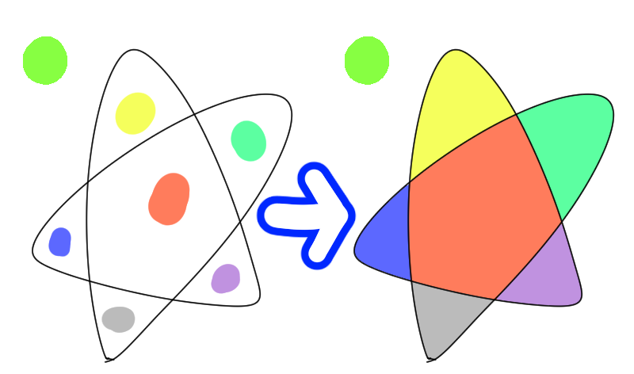
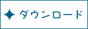
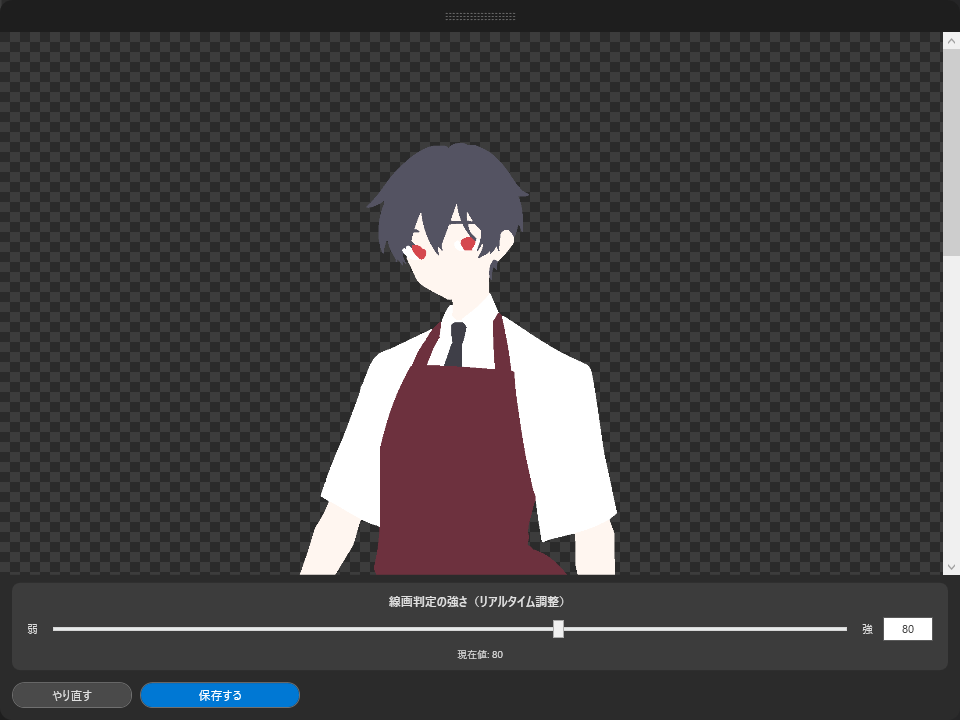
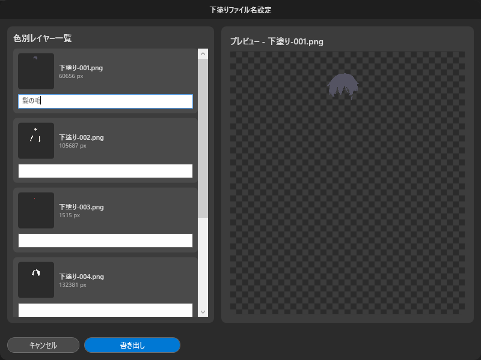
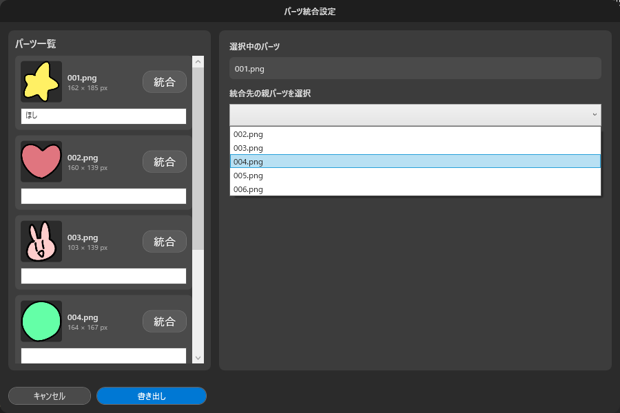

自動下塗り＆画像分割ツール「ぽちぬりα」

下塗り作業をぐんと楽にする自動下塗りツールです。
ポンポンと色を置くだけで下塗りが一気にできます！
※細かい隙間は最後に手作業で埋める必要があります。
使い方-自動下塗りの場合-
①PNG読み込みを押して、線画と色指定を統合したPNG画像を読み込みます。
②自動下塗りを押すと、確認ウィンドウが開きます。

必要に応じて、スライダー(あるいは数値)を操作して、線画（黒い線）と塗り範囲を区別する感度を調整します。
③保存するを押すと、保存先を選ぶエクスプローラーが開くので選択します。

パーツごとにリネームしたい場合は、リスト画像下のボックスに入力します。
書き出しを押すとリネームされた下塗りファイルというフォルダが自動生成されその中に統合されます。そして、統合された下塗り画像と色ごとに分割された画像が書き出されます。
スライダーの推奨設定値
デフォルト（80）: 通常の線画に最適
弱（10～50）: 線が細い・薄い・アンチエイリアスが強い線画
強（90～120）: 線が太い・濃い・くっきりした線画
使い方-パーツ分離の場合-

こちらの画像のように、一枚の画像に複数のオブジェクトが作画されているものをパーツごとに書き出す機能です。
①PNG読み込みを押して、分離したいPNG画像を読み込みます。必ず背景は透過状態のものを用意してください。

②左パネルのサムネイル下にあるボックスにリネームしたい名前を入力します。
③途切れた線などは分離されてしまいます
他のパーツと統合したいときには統合を押し、統合したい親画像をプルダウンから選択します。
④書き出しを押すと、指定フォルダ内に自動生成されたパーツ分離ファイルというフォルダに分離パーツが書き出されます。